170, 200 and 250 CID Six Engine · 21-02-03
When installing nuts or bolts that must be torqued (refer to the end of this Part for torque specifications), oil the threads with light-weight engine oil. Do not oil threads that require oil-resistant or water-resistant sealer.
Refer to Part 21-01 for cleaning and inspection and engine test procedures.
Engine Front Supports
The procedures given apply to either a right or left installation.
The engine front supports are located on each side of the cylinder block (Figs. 2 through 6).
Engine
The 170, 200 and 250 CID sixcylinder engines are in-line, overhead valve design of lightweight cast iron construction. The rating plate identification symbol for the 170 CID engine is U; for the 200 CID, it is T; and the symbol for the 250 CID is L.
Adjustment and repair procedures for the three engines are basically the same except the 200 and 250 CID engines have seven main bearings and the 170 CID engine has five.
A sectional view of a typical sixcylinder engine is shown in Fig. 1.
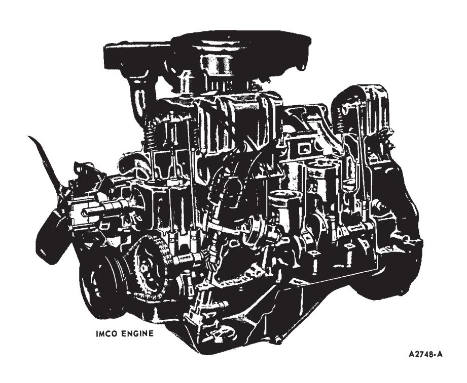
Fig. 1 — Sectional View of Typical Six-Cylinder EngineA positive closed-type crankcase ventilation system reduces the amount of air pollutants emitted by the crankcase ventilating system.
Exhaust Emission Control System
The 170, 200 and 250 CID engines incorporate an IMCO exhaust emission control system.
The IMCO exhaust emission control system is designed to reduce the hydrocarbon and carbon monoxide content of gasoline engine exhaust gases. By controlling the amount of contaminants emitted through the exhaust system to an acceptable minimum, air pollution is reduced. This is achieved by using a specially-calibrated carburetor and distributor.
Maverick 170-200 CID and Mustang 200 CID Engine
Removal
- Remove the insulator to support bracket nuts and washers from both insulators (Figs. 2 and 3).
- Raise the engine with a jack and wood block placed under the oil pan.
- Remove the insulator-to-engine bolts and washers and remove the insulator.
Installation
- Position the insulator assembly on the engine and install the insula- tor-to-engine bolts and washers finger-tight.
- Lower the engine carefully to make sure the insulator stud engages the hole in the support bracket.
- Install the insulator to support bracket washer and nut on both engine front mounts. Tighten the insulator bolts and nuts to specifications.
Mustang, Fairlane, and Montego (250 CID Engine)
Removal
-
Remove the insulator bracketto-block attaching screws (Mustang, (Fig. 4). For Fairlane, Fairlane Ran- chero and Montego see Fig. 6.
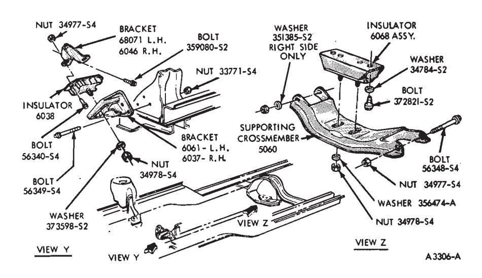
Fig. 2 — Maverick Engine Front and Rear Supports—170 and 200 CID Engines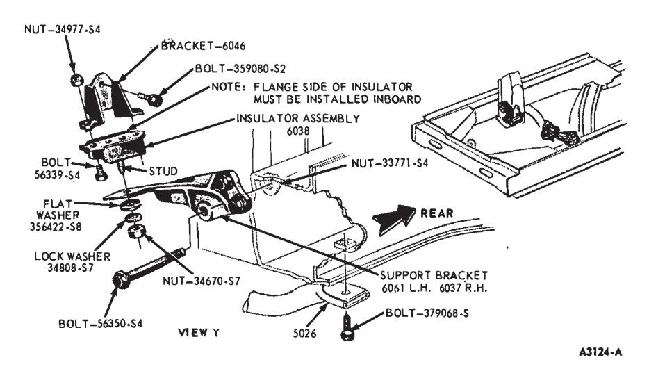
Fig. 3 — Mustang Engine Front Supports—200 CID Engine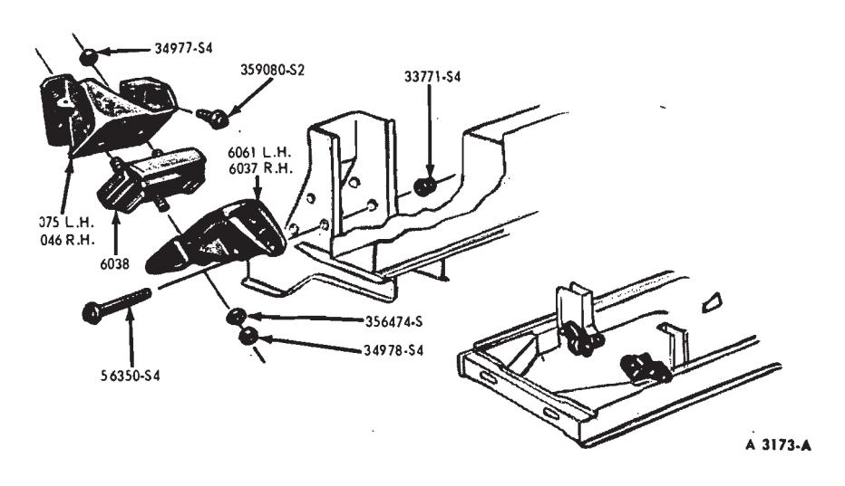
Fig. 4 — Mustang Engine Front Supports—250 CID Engine -
Using a wood block placed under the oil pan, raise the engine just enough to remove the weight from the through bolt, and remove the through bolt (except Mustang). On Mustang, remove the insulator support attaching nut from beneath the frame bracket; then raise the engine enough for the stud to clear.
-
Slide the insulator and bracket from the block.
-
On the bench, remove the insulator-to-bracket attaching nuts, and remove the insulator.
Installation
- Position the new insulator on the bracket and install the attaching nuts and torque them to specifications.
- Slide the insulator and bracket assembly into position at the cylinder block.
- Install the through bolt (except Mustang).
- Install the insulator bracketto-block attaching screws and torque them to specifications. On a Mustang, gently lower the engine guiding the stud through the frame bracket.
- Install the attaching nut and washer and torque to specifications.
- Remove the jack and the wood block.
Fairlane, Falcon and Montego (Except 250 CID Engine)
Removal
- Remove the insulator to lower support bracket attaching nut and washer (Fig. 5).
- Using a wood block placed under the oil pan raise the engine approximately 1/2 inch.
- Remove two bolts, each side, attaching upper insulator bracket to engine.
- Remove insulator assembly and upper bracket. Remove nuts and bolts attaching insulator to upper bracket and separate parts.
Installation
-
Attach insulator assembly to upper bracket with bolts and nuts.
-
Install insulator assembly and upper bracket with two bolts, on each side to engine.
-
Carefully lower the engine guiding the insulator bolt into the lower support bracket.
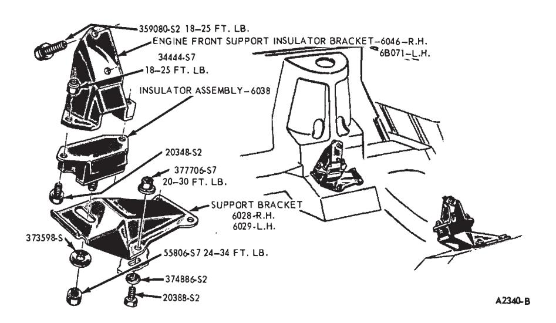
Fig. 5 — Fairlane, Falcon and Montego Engine Front Supports (Except 250 CID Engine)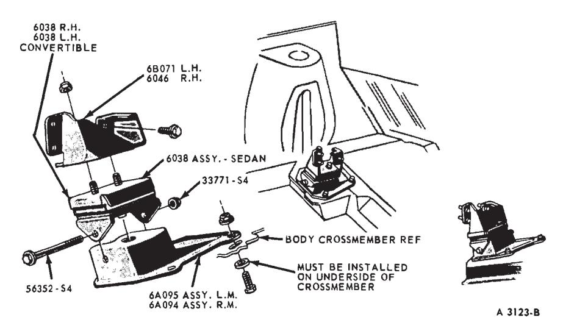
Fig. 6 — Fairlane and Montego Engine Front Supports—250 CID Engine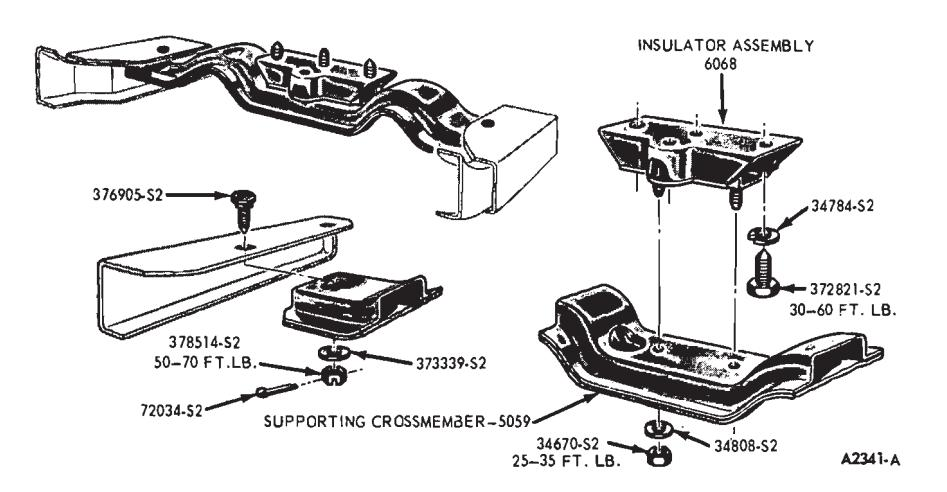
Fig. 7 — Fairlane, Falcon and Montego Engine Rear Support -
Install the insulator to lower support bracket attaching nut and washer, and torque to specifications.
Engine Rear Support
The rear support is located at the transmission extension housing (Fig. 7).
Fairlane, Falcon and Montego
Removal
- Support the transmission with a floor jack to remove weight from the supporting crossmember.
- Remove nuts and washers attaching insulator assembly to crossmember.
- Remove the attaching nuts, washers, and cotter keys from the supporting crossmember, and remove the supporting crossmember.
- Remove the bolts and washers that attach the engine rear insulator assembly to the transmission.
- Remove the insulator assembly.
Installation
- Position the engine rear insulator assembly in place beneath the transmission, and install the attaching bolts and washers. Torque them to specifications.
- Position the supporting crossmember and install the attaching washers and nuts. Torque them to specifications.
- Install the cotter keys. If necessary, continue tightening the two outer nuts as required to align the castellations.
- Install the nuts and washers attaching the insulator assembly to the crossmember. Tighten to specification.
- Remove the jack.
Maverick and Mustang
Removal
- Remove the insulator to rear support nuts and washers (Figs. 2 and 8).
- Raise and support the transmission with a transmission jack.
- Loosen one of the rear support-to-crossmember bolts.
- Remove the other rear supportto-crossmember bolt, washer (right side only) and nut, and swing the rear support down and out of the way.
- Remove the insulator- to-transmission bolts and washers and remove the insulator.
Installation
-
Position the insulator against the transmission and install the insulator-to-transmission bolts and washers. Torque the bolts to specifications.
-
Swing the rear support up into position and install the rear support-to-crossmember bolt washer (right side only) and nut. Torque both rear support-to-crossmember nuts to specifications.
-
Lower the transmission and install the insulator-to-rear support nuts and washers. Torque the nuts to specifications.
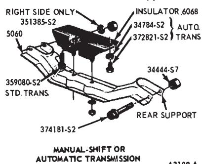
Fig. 8 — Mustang Engine Rear Support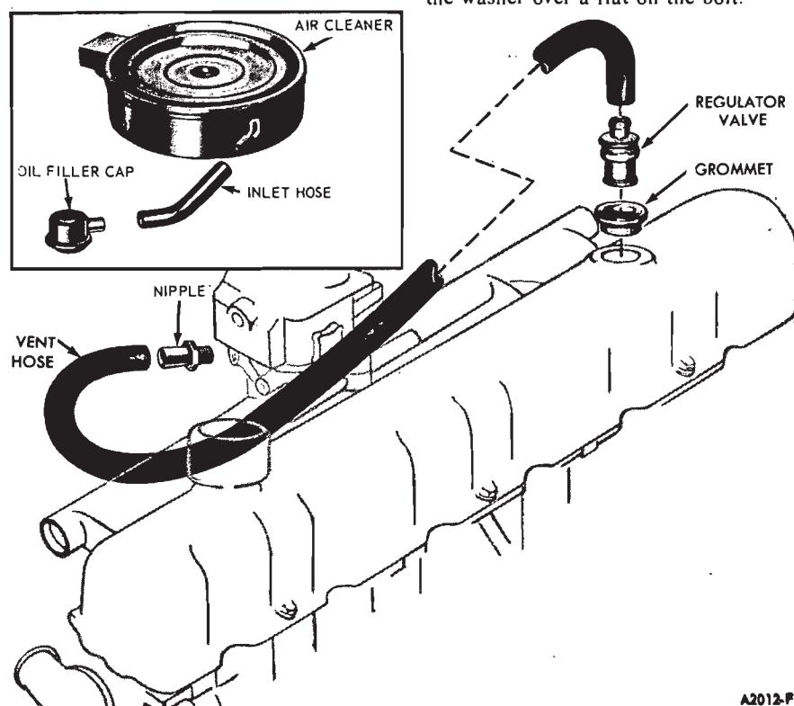
Fig. 9 — Closed Crankcase Ventilation System Components
Exhaust Manifold
Removal
- Remove the air cleaner and hot air duct. Disconnect the muffler inlet pipe from the exhaust manifold, and remove the automatic choke hot air tube.
- Bend the exhaust manifold attaching bolt lock tabs back and remove the bolts. Remove the exhaust manifold.
Installation
- Clean the mating surfaces of the exhaust manifold and cylinder head. Scrape the gasket material from the mounting flange of the exhaust manifold and muffler inlet pipe.
- Apply graphite grease to the mating surface of the exhaust manifold.
- Position the exhaust manifold on the cylinder head and install the attaching bolts and tab washers. Working from the center to the ends, torque the bolts to specifications. Lock the bolts by bending one tab of the washer over a flat on the bolt.
- Place a new gasket on the muffler inlet pipe. Position the muffler inlet pipe to the manifold. Install and torque the attaching nuts to specifications. Install the automatic choke hot air tube.
- Install the air cleaner and hot air duct. Start the engine and check for exhaust leaks.
Crankcase Ventilation System
The closed crankcase ventilation system components are shown in Fig.
Removal
- Remove the inlet hose from the air cleaner and the oil filler cap.
- Remove the air cleaner.
- Grasp the crankcase vent hose near the rocker arm cover grommet and pull the regulator valve from the rocker arm cover.
- Remove the regulator valve from the vent hose and remove the vent hose from the hose fitting in the carburetor spacer.
Installation
- Install the vent hose on the fitting in the carburetor spacer and the regulator valve in the hose.
- Insert the regulator valve into the rocker arm cover mounting grommet.
- Install the air cleaner.
- Connect the inlet hose to the air cleaner and the oil filler cap.
- Operate the engine and check for leaks.
Valve Clearance Adjustment
A 0.060-inch shorter than standard push rod and a 0.060-inch longer than standard push rod are available for service to provide a means of compensating for dimensional changes in the valve mechanism. Refer to the Master Parts List or the specifications for the pertinent color code.
Valve stem to valve rocker arm clearance should be within specifications with the hydraulic lifter completely collapsed. Repeated valve reconditioning operations (valve and/or valve seat refacing) will decrease the clearance to the point that, if not compensated for, the hydraulic valve lifter will cease to function and the valve will be held open.
To determine whether a shorter or a longer push rod is necessary, make the following check:
-
Disconnect the brown lead (I terminal) and the red and blue lead (S terminal) at the starter relay. Install an auxiliary starter switch between the battery and S terminals of the Starter relay. Crank the engine with the ignitions switch OFF until the No. 1 piston is on TDC after the compression stroke.
-
With the crankshaft in the positions designated in Steps 3 and 4, position the hydraulic lifter compressor tool on the rocker arm. Slowly apply pressure to bleed down the hydraulic lifter until the plunger is completely bottomed (Fig. 10). Hold the lifter in this position and check the available clearance between the rocker arm and the valve stem tip with a feeler gauge.
If the clearance is less than specifications, install an under size push rod. If the clearance is greater than specifications, install an oversize push rod.
-
With the No. 1 piston on TDC after the compression stroke, use the procedure in step 2 and check the following valves:
No. 1 Intake
No. 1 Exhaust
No. 2 Intake
No. 3 Exhaust
No. 4 Intake
No. 5 Exhaust
-
Now rotate the crankshaft until the No. 6 piston is on TDC after the compression stroke (1 revolution of the crankshaft). By using the procedure in step 2, check the following valves:
- No. 2 Exhaust
- No. 3 Intake
- No. 4 Exhaust
- No. 5 Intake
- No. 6 Intake
- No. 6 Exhaust
-
When compressing the valve spring to remove the push rods, be sure the piston in the individual cylinder is below TDC to avoid contact between the valve and the piston.
To replace a push rod, it will be necessary to remove the valve rocker arm shaft assembly.
Upon replacement of a valve push rod, valve rocker arm shaft assembly or hydraulic valve lifter, the engine should not be cranked or rotated until the hydraulic lifters have had an opportunity to leak down to their normal operating position. The leak down rate can be accelerated by using the tool shown in Fig. 10 on the valve rocker arm and applying pressure in a direction to collapse the lifter.
Valve Rocker Arm Shaft Assembly
Removal
- Remove the air cleaner and the crankcase ventilation system.
- Remove the valve rocker arm cover and discard the gasket.
- Remove the rocker arm shaft support bolts by loosening the bolts two turns at a time in sequence. Remove the rocker arm shaft assembly (Fig. 11). Remove the valve push rods. Make sure the push rods are identified before removal so they can be returned to the same location when they are installed.
Installation
- Apply Lubriplate to both ends of the push rods and to the valve stem tip.
- Install the valve push rods. Position the valve rocker arm shaft assembly on the cylinder head.
- Install and tighten all valve rocker arm support bolts, two turns at a time in sequence, until the supports fully contact the cylinder head. Torque the bolts to specifications.
- If any part which could affect the valve clearance has been changed, check the valve clearance following the procedure outlined under Hydraulic Valve Lifter—Rocker Shaft Mounted Rocker Arms (Part 21-01, Engine Tests).
- Clean the valve rocker arm cover and cylinder head gasket surfaces. Coat one side of a new gasket with an oil resistant sealer and lay the cemented side of the gasket in place on the cover. Install the cover, making sure the gasket seats evenly around the head. Tighten the cover attaching bolts in two steps. First, torque the bolts to specifications; then, retorque to the same specifications two minutes after initial tightening.
- Install the crankcase ventilation system and the air cleaner.
Disassembly
- Remove the pin and spring washer from each end of the valve rocker arm shaft.
- Slide the valve rocker arms, springs, and supports off the shaft. Be sure to identify the parts.
- If it is necessary to remove the plugs from each end of the shaft, drill or pierce the plug on one end. Use a steel rod to knock out the plug on the opposite end. Working from the open end, knock out the remaining plug.
Assembly
-
All valves, valve stems and valve guides are to be lubricated with heavy oil MS. The valve tips are to have lubriplate or equivalent applied. The lubricant is to be applied before installation.
All rocker arms, rocker arm shafts or fulcrum seats are to be lubricated with heavy oil MS before installation.
-
If the plugs were removed from the ends of the shaft, use a blunt tool or large diameter pin punch and install a plug, cup side out, in each end of the shaft.
-
Install the spring washer and pin on one end of the shaft.
-
Install the valve rocker arms, supports, and springs in the order shown in Fig. 12. Be sure the oil holes in the shaft are facing downward. Complete the assembly by installing the remaining spring washer and pin.
Cylinder Head
Removal
-
Drain the cooling system.
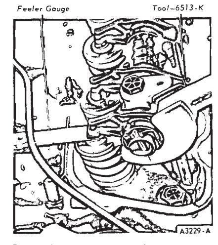
Fig. 10 — Checking Valve Clearance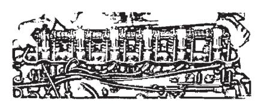
Fig. 11 — Valve Rocker Arm Shaft Removal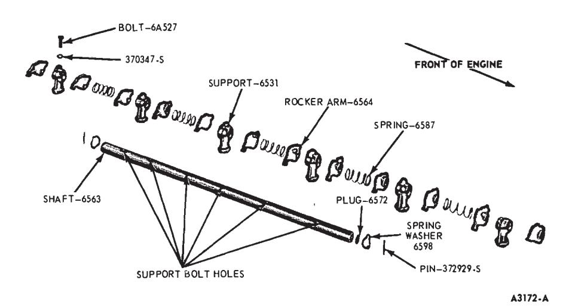
Fig. 12 — Valve Rocker Arm Shaft AssemblyRemove the air cleaner. Disconnect the radiator upper hose at the engine.
-
Disconnect the muffler inlet pipe at the exhaust manifold. Pull the muffler inlet pipe down. Remove the gasket.
-
Disconnect the accelerator retracting spring. Disconnect the accelerator rod at the carburetor.
-
Disconnect the transmission kickdown rod. Disconnect the accelerator linkage at the bellcrank assembly.
-
Disconnect the fuel inlet line at the fuel filter hose, and the distributor vacuum lines. Disconnect vacuum lines as necessary for accessibility and identify them for proper connection.
-
Disconnect the distributor vacuum line at the distributor. Disconnect the carburetor fuel inlet line at the fuel pump. Remove the lines as an assembly.
-
Disconnect the spark plug wires at the spark plugs and the temperature sending unit wire at the sending unit.
-
Remove the crankcase ventilation system.
-
Remove the valve rocker arm cover.
-
Remove the valve rocker arm shaft assembly. Remove the valve push rods in sequence (Fig. 13).
-
Remove the remaining cylinder head bolts and remove the cylinder head. Do not pry between the cylinder head and block as the gasket surfaces may become damaged.
Installation
-
Clean the head and block gasket surfaces. (Refer to Part 21-01 for cleaning and inspection procedures.) If the cylinder head was removed for a gasket change, check the flatness of the cylinder head and block. Install guide studs at each end of the cylinder block (Fig. 14).
-
On a 170 or 250 CID six engine, apply cylinder head gasket sealer to both sides of a new gasket. Spread the sealer evenly over the entire gasket surface. Do not apply sealer to a 200 CID Six engine head gasket. Composition head gaskets are to be installed without sealer. Position the gasket over the guide studs on the cylinder block.
-
Install a new gasket on the flange of the muffler inlet pipe.
-
Lift the cylinder head over the guides and slide it down carefully, guiding the exhaust manifold studs into the muffler inlet pipe.
-
Install, but do not tighten two bolts at opposite ends of the head to hold the head and gasket in position. Remove the guides and install the remaining bolts.
-
The cylinder head bolts are tightened in three progressive steps. Torque all the bolts in sequence (Fig. 15) to 55 ft-lbs, then to 65 ft-lbs, and finally to specifications. When cylinder head bolts have been tightened following this procedure, it is not necessary to retorque the bolts after extended operation. However, on cylinder heads with composition gaskets, the bolts may be checked and retorqued, if desired.
-
Apply Lubriplate to both ends of the push rods. Install the push rods in the original bores, positioning the lower end of the rods into the tappet sockets. Apply Lubriplate to the valve stem tips and to the rocker arm pads.
-
Install the valve rocker arm shaft assembly following procedures under Valve Rocker Arm Shaft In- stallation.
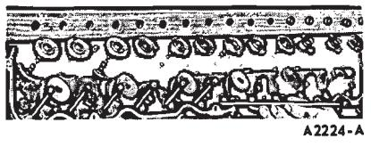
Fig. 13 — Valve Push Rod Removal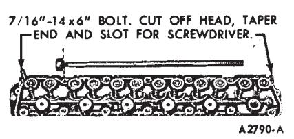
Fig. 14 — Cylinder Head Guide Studs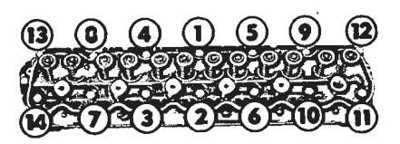
Fig. 15 — Cylinder Head Bolt Torque SequenceCheck the valve clearance, following the procedure outlined under Valve Clearance Adjustment.
-
Install the muffler inlet pipe lock washers and attaching nuts. Torque the nuts to specifications.
-
Connect the radiator upper hose at the coolant outlet housing.
-
Position the distributor vacuum line and the carburetor fuel inlet line on the engine. Connect the fuel line at the fuel filter using a new clamp; then connect the distributor vacuum line at the carburetor.
-
Connect the accelerator linkage at the bellcrank assembly. Connect the transmission kickdown rod.
-
Connect the accelerator rod retracting spring. Connect the accelerator rod at the carburetor.
-
Connect the distributor vacuum line at the distributor. Connect the carburetor fuel inlet line at the fuel pump. Connect all vacuum lines using previous identification for proper connection.
-
Connect the temperature sending unit wire at the sending unit. Connect the spark plug wires. Be sure the wires are forced all the way down into their sockets.
-
Fill and bleed the cooling system.
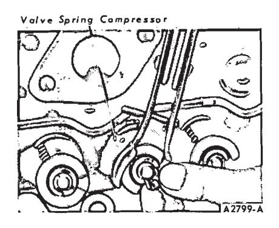
Fig. 16 — Compressing Valve Spring—On Bench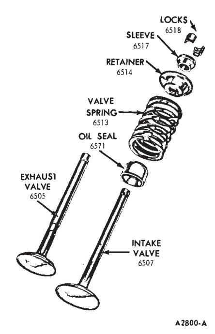
Fig. 17 — Typical Valve Assembly -
Install the crankcase ventilation system.
-
Start the engine and check for coolant and oil leaks.
Disassembly
-
Remove deposits from the combustion chambers and valve heads with a scraper and a wire brush before removing the valves. Be careful not to scratch the cylinder head gasket surfaces.
-
Compress the valve springs (Fig. 16). Remove the valve retainer locks and release the spring. If the valve locks are stuck, place a piece of steel tubing (3/4-inch OD, 1/2-inch ID and 3-inches long) over the end of the valve stem squarely against the sleeve surface. Tap the tube with a steel hammer to dislodge the locks.
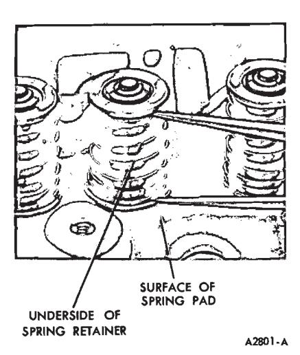
Fig. 18 — Valve Spring Assembled Height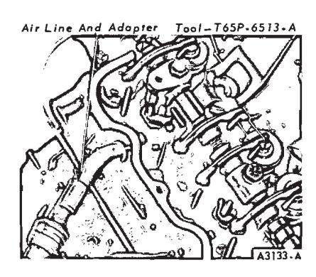
Fig. 19 — Compressing Valve Spring—In Chassis -
Remove the sleeve, spring retainer, stem seal, and valve. Discard the valve stem seals. Identify all valve parts. If the cylinder head is to be replaced, remove the manifold assembly.
Assembly
- Clean, inspect and repair all parts before assembly. If the cylinder head is being replaced, install the manifold assembly. Lubricate the valve guides and valve stems with engine oil. Apply Lubriplate to the tip of the valve stems.
- Install each valve (Fig. 17) in the valve guide from which it was removed or to which it was fitted. Install a new stem seal on the valve.
- Install the valve spring assembly over the valve. Install the spring retainer and sleeve.
- Compress the spring and install the retainer locks (Fig. 16).
- Measure the assembled height of the valve spring from the surface of the cylinder head spring pad to the underside of the spring retainer with dividers (Fig. 18).
- Check the dividers against a scale. If the assembled height is greater than specifications, install the necessary 0.030-inch thick spacer(s) between the cylinder head spring pad and the valve spring to bring the assembled height to the recommended dimension. Do not install spacers unless necessary. Use of spacers in excess of recommendations will result in overstressing the valve springs and overloading the camshaft lobes which would lead to spring breakage and worn camshaft lobes.
Valve Spring, Retainer and Stem Seal Replacement
Broken valve springs or leaking valve stem seals and retainer may be replaced without removing the cylinder head, provided damage to the valve or valve seat has not occurred.
-
Remove the air cleaner. Remove the crankcase ventilation regulator valve from the valve rocker arm cover. Remove the valve rocker arm cover. Remove the applicable spark plug.
-
Loosen the valve rocker arm shaft support bolts two turns at a time, in sequence, until the valve spring pressure is relieved. Remove both valve push rods of the cylinder to be serviced.
-
Install an air line with an adapter in the spark plug hole.
-
Tighten the attaching bolts just enough to seat the rocker arm shaft supports on the cylinder head. Push the rocker arm to one side and secure it in this position (Fig. 19). To move the rocker arm on either end of the shaft, it will be necessary to remove the retaining pin and spring washer and slide the rocker arm off the shaft.
-
Turn on the air supply. Air pressure may turn the crankshaft until the piston reaches the bottom of the stroke. Using the valve spring compression tool shown in Fig. 19, compress the valve and remove the valve spring retainer locks, the sleeve, spring retainer and the valve spring. If air pressure fails to hold the valve in the closed position during this operation, it can be presumed that the valve is not seating or is damaged. If this condition occurs, remove the cylinder head for further inspection.
-
Remove the valve stem seal (Fig. 20). If air pressure has forced the piston to the bottom of the cylinder, any removal of air pressure will allow the valve(s) to fall into the cylinder. A rubber band, tape or string wrapped around the end of the valve stem will prevent this condition and will still allow enough travel to check the valve for binds.
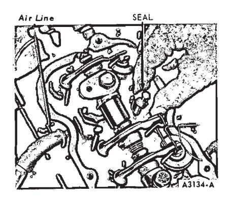
Fig. 20 — Removing Valve Stem Seal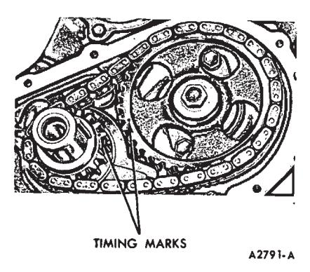
Fig. 21 — Aligning Timing Marks -
Install a new valve stem seal. Position the spring over the valve. Install the spring retainer and sleeve. Compress the valve spring and install the valve spring retainer locks.
-
Apply Lubriplate to both ends of the push rod, the valve and push rod ends of the rocker arm, and the valve stem tip. Remove the rocker arm shaft and install the push rod(s), making sure the lower end of the rod is positioned in the valve lifter push rod cup.
-
Remove the wire securing the valve rocker arm and slide the rocker arm into position. If an end valve rocker arm was removed, slide it into position on the shaft and install the spring washer and retainer pin. Turn off the air and remove the air line and adapter. Install the spark plug and spark plug wire.
-
Install the rocker arm shaft by following the instructions under Rocker Arm Shaft Assembly Installation.
-
Clean the valve rocker arm cover and cylinder head gasket surfaces. Coat one side of a new gasket with an oil-resistant sealer and lay the cemented side of the gasket on the cover. Install the cover making sure the gasket seats evenly around the head. Tighten the cover attaching bolts in two steps. First, torque the bolts to specifications. Two minutes later, torque the bolts to the same specifications.
-
Insert the regulator valve (with the vent hose attached) into the valve rocker arm cover mounting grommet. Install the air cleaner.
Water Pump
Removal
-
Drain the cooling system.
Remove the power steering and air conditioner drive belts, if so equipped,
-
Disconnect the radiator lower hose at the water pump. Remove the drive belt, fan, or fan and drive clutch, and water pump pulley.
-
Disconnect the heater hose at the water pump.
-
Remove the water pump.
Installation
Before a water pump is re-installed, check it for damage. If it is damaged, replace it.
- If a new water pump is to be installed, remove the heater hose fitting from the old pump and install it on the new pump. Clean the gasket surfaces on the water pump and cylinder block. A 250 CID six engine originally uses a one piece gasket for the cylinder front cover and water pump. Trim away the old gasket at the edge of the cylinder front cover. Use a water pump service gasket to replace it.
- Coat the new gasket on both sides with water-resistant sealer and position it on the cylinder block.
- Position the water pump and install the lock washers and attaching bolts (the alternator adjusting arm is secured by one water pump bolt). Torque the bolts to specifications.
- Connect the radiator lower hose and the heater hose to the water pump.
- Install the water pump pulley and fan or fan and drive clutch. Torque the bolts evenly and alternately to specifications.
- Install the power steering and air conditioner drive belts, if so equipped, and adjust the tension to specifications.
- Fill and bleed the cooling system. Operate the engine until normal operating temperature is reached. Check for leaks and check the coolant level.
Cylinder Front Cover and Timing Chain
-
Drain the cooling system and the crankcase. Disconnect the radiator upper hose at the coolant outlet housing and the radiator lower hose at the water pump. On a vehicle with automatic transmission, disconnect the transmission oil cooler lines from the radiator.
-
Remove the radiator. Remove the drive belt, fan and pulley. On a vehicle with air conditioning remove the condenser retaining bolts and position the condenser forward. Do not disconnect the refrigerant lines. Remove the compressor drive belt. If so equipped, remove the accessory drive pulley. Using Tool T58P-6316-B, remove the crankshaft damper.
-
On a 170 or 200 CID engine, remove the cylinder front cover attaching screws from the cover and from the oil pan. Pry the top of the front cover away from the block slightly and using a thin bladed knife cut the oil pan gasket flush with the front face of the cylinder block.
-
On a 250 CID engine, remove the oil pan. Remove the cylinder front cover.
-
Clean any gasket material from the surfaces.
-
Rotate the crankshaft in a clockwise direction (as viewed from the front) to take up the slack on the left side of the chain.
-
Establish a reference point on the block and measure from this point to the chain. Rotate the crankshaft in the opposite direction to take up the slack on the right side of the chain. Force the left side of the chain out with the fingers and measure the distance between the reference point and the chain. The deflection is the difference between the two measurements. If the deflection exceeds 1/2 inch, replace the timing chain and sprockets.
-
Crank the engine until the timing marks are aligned as shown in Fig. 21. Remove the camshaft sprocket attaching bolt and washer. Slide both sprockets and timing chain forward and remove them as an assembly (Fig. 22).
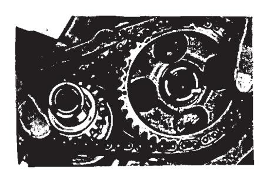
Fig. 22 — Timing Chain and Sprockets Removal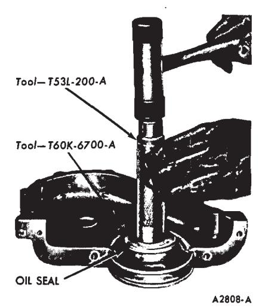
Fig. 23 — Crankshaft Front Oil Seal Replacement
Front Oil Seal
- Drive out the oil seal with a pin punch. Clean the recess in the cover.
- Coat a new seal with grease and install the seal. Drive the seal in until it is fully seated in the recess, (Fig. 23). Check the seal after installation to be sure the spring is properly positioned in the seal.
Installation
-
Clean and inspect all parts before installation. Oil the timing chain after installing it on the camshaft and crankshaft. Be sure the timing marks on the sprockets and chain are positioned as shown in Fig. 21. Install the camshaft sprocket attaching bolt and washer. Torque the bolt to specifications.
-
Apply oil-resistant sealer to a new cylinder front cover gasket and position the gasket on the cylinder front cover. Apply sealer to the exposed area of the gasket.
On a 170 or 200 CID engine, coat the gasket surface of the oil pan with oil resistant sealer. Cut and position the required portions of a new gasket on the oil pan. Apply sealer to the exposed areas of the gasket, including the corners where they contact the front cover gasket.
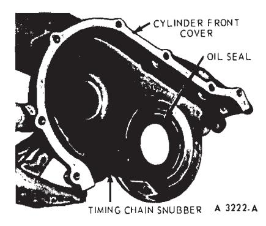
Fig. 24 — Timing Chain Snubber Installation—250 CID Six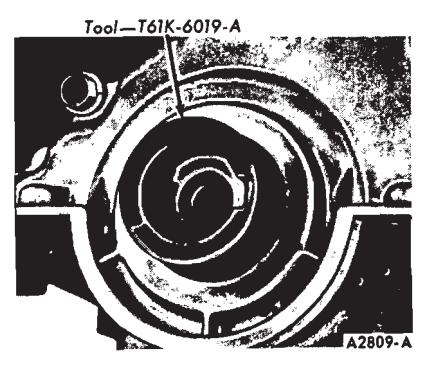
Fig. 25 — Cylinder Front CoverOn a 250 CID engine, install the timing chain snubber in the front cover.
-
Install the cylinder front cover using the tool shown in Fig. 25.